13. Behaviour Analysis
Action recognition, optical flow, I3D, SlowFast, anomaly detection, autoencoders
1. Problem Definition and Applications
Behaviour analysis in computer vision aims to extract high-level semantic behavior information from a scene, typically from video. It goes beyond detecting what objects are present to understanding what those objects are doing.
Why It Is Needed
- Increased video data availability: Surveillance cameras, dashcams, and smartphones generate far more video than humans can analyze. The volume is growing faster than the workforce that can monitor it.
- Automation requirement: Security monitoring, traffic management, and sports analytics all require automatic behavior interpretation.
- Context-dependence: The same motion can mean different things depending on scene context (running at a track vs. running from a crime scene).
| Application | Description |
|---|---|
| Surveillance | Monitoring public or private spaces for security threats |
| Anomaly detection | Identifying unusual or suspicious events (abandoned bags, erratic behavior) |
| Violence detection | Detecting fighting, assault, or violent actions automatically |
| Traffic monitoring | Analyzing vehicle and pedestrian flow, detecting violations |
| Video content analysis | Scanning uploaded videos for illegal content (used by video platforms and law enforcement) |
| Sports event detection | Automatically detecting goals, fouls, and other events |
| Crowd analysis | Panic detection, crowd counting, anomalous flow detection |
2. Action Recognition
Action/activity recognition determines the activity a person is doing. In the supervised variant this is a classification problem where the set of possible actions is pre-defined (e.g., walking, running, jumping).
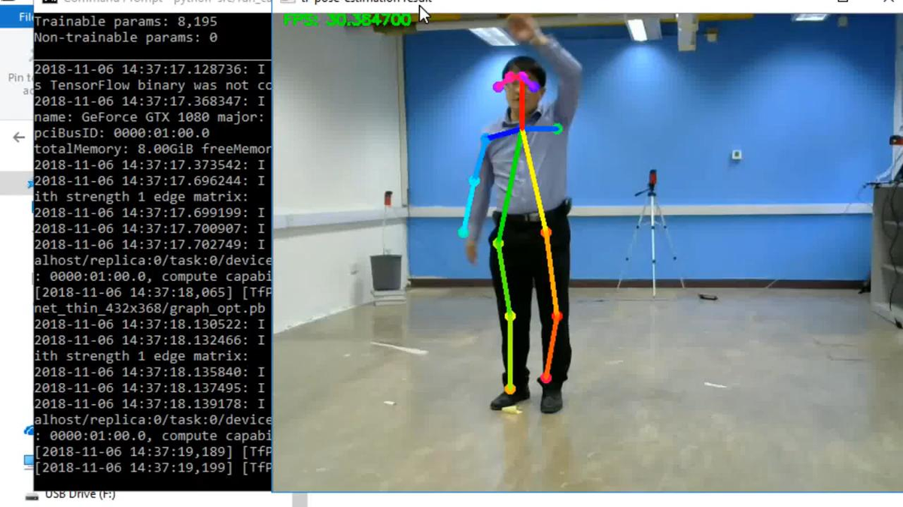
Still Images vs. Video
| Input | Difficulty | Approach |
|---|---|---|
| Still images | Relatively simple classification problem | Standard CNNs; single-frame appearance features |
| Video | Added temporal dimension makes problem harder | 3D CNNs, RNN/LSTM, two-stream architectures |
3. Two-Stream Architecture
The two-stream architecture handles video by splitting spatial and temporal processing into two parallel CNN pathways:
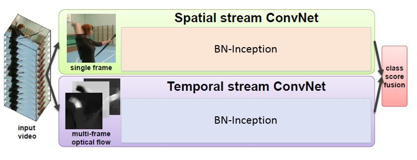
| Stream | Input | Captures |
|---|---|---|
| Spatial stream | Single RGB frame | Appearance: what objects look like, scene context, body pose |
| Temporal stream | Multi-frame optical flow | Motion: how objects are moving |
Optical flow (a simplified approach to handling the temporal dimension) transforms the 3D video into 2D motion history by collapsing the temporal dimension into flow fields. The spatial and temporal class scores are then fused (e.g., by averaging or learned weighting) to produce the final action prediction.
4. 2D vs. 3D Convolutions
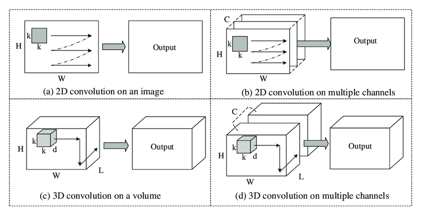
| Property | 2D Convolution on video | 3D Convolution on video |
|---|---|---|
| Kernel shape | $k \times k$ (spatial only) | $k \times k \times d$ (spatial + temporal) |
| Sliding dimensions | Height, width only | Height, width, AND time |
| Output | 2D feature map per frame | 3D feature volume |
| Temporal modeling | Treats frames independently | Learns spatiotemporal features jointly |
5. CNN + LSTM for Long-Term Temporal Dependencies
3D CNNs have trouble with long-term temporal dependencies (e.g., understanding that a high jump involves a run-up, jump, and landing spread over many seconds). The CNN + LSTM pipeline addresses this:
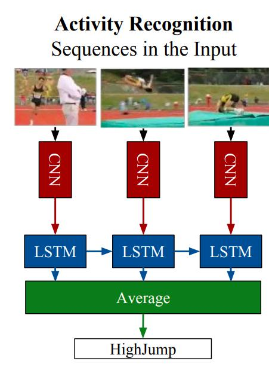
- CNN: Extracts a feature vector from each individual frame.
- LSTM: Processes the sequence of per-frame feature vectors, maintaining a hidden state that accumulates temporal information.
- Average: LSTM outputs are averaged to produce a single clip-level feature vector.
- Classification: The clip-level feature is classified into an action category.
| Sequence Model | Key Property |
|---|---|
| RNN | Basic recurrent model; suffers from vanishing/exploding gradients for long sequences |
| GRU | Uses update and reset gates; simpler than LSTM; good for moderate-length sequences |
| LSTM | Input, output, and forget gates; excels at long-term dependencies |
6. Outlier-Based Anomaly Detection
Detecting specific anomalies with supervised classifiers is possible but requires enumerating all possible anomalies. Real-world anomalies are too diverse for this. The better approach: model the normal and detect deviations.
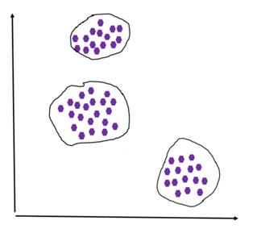
- Training: Represent events as points in high-dimensional feature space. Model what "normal" looks like using only normal training data.
- Testing: Evaluate model mismatch — events far from the learned normal distribution are declared anomalies.
7. Autoencoders for Anomaly Detection
An autoencoder is a neural network trained to reconstruct its input from a compressed bottleneck. Trained only on normal data, it learns to reconstruct normal patterns well — and fails on anomalies.

How Autoencoders Detect Anomalies
- Train the autoencoder on only normal data. Minimize reconstruction error on normal patterns.
- During testing, compare the reconstructed version with the original input.
- If the reconstructed version differs greatly from the input (high MSE), the input is anomalous — the autoencoder cannot reconstruct something it never saw during training.
Denoising Autoencoders

A denoising autoencoder adds noise to the input before encoding, but computes the loss against the original clean image. This forces the network to learn robust representations of the underlying clean signal. During anomaly detection, the model improves on normal examples over training but produces high loss on unseen outliers.
Four Autoencoder Hyperparameters
| Hyperparameter | Description |
|---|---|
| Code size | Number of nodes in the bottleneck layer; smaller = more compression |
| Number of layers | Depth of encoder and decoder |
| Nodes per layer | Decreases through encoder; increases symmetrically through decoder |
| Loss function | Typically MSE loss |
8. Convolutional Autoencoders (CAEs)
State-of-the-art anomaly detection uses Convolutional Autoencoders — much better than fully-connected autoencoders for image/video data.

Pooling and Unpooling
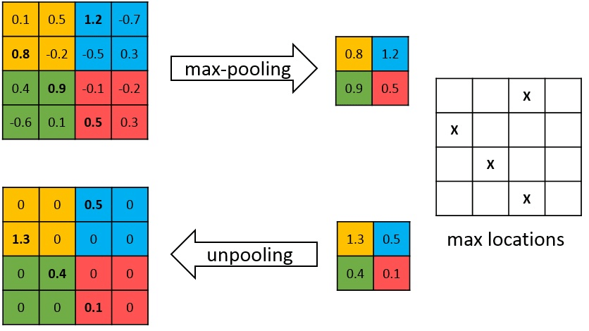

Transposed Convolution (Deconvolution)
The deconvolution (transposed convolution) layer recovers spatial dimensions in the decoder:
- Convolution: maps a larger input region to a smaller output (many-to-one). Reduces spatial dimensions.
- Deconvolution: maps a smaller input to a larger output (one-to-many). Increases spatial dimensions.
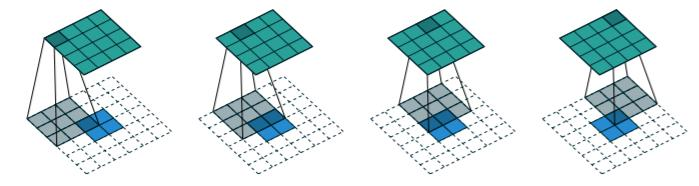
9. I3D Architecture
I3D (Inflated 3D ConvNet) is one of the most important architectures for video feature extraction. It converts successful 2D image classification networks into 3D video understanding networks through "inflation."
Inflation: From 2D to 3D Filters
Take a 2D convolutional filter of size $k \times k$ (pre-trained on ImageNet). Repeat its weights $N$ times along the temporal dimension to create a $k \times k \times N$ 3D filter. Divide all weights by $N$ to preserve activation magnitudes.
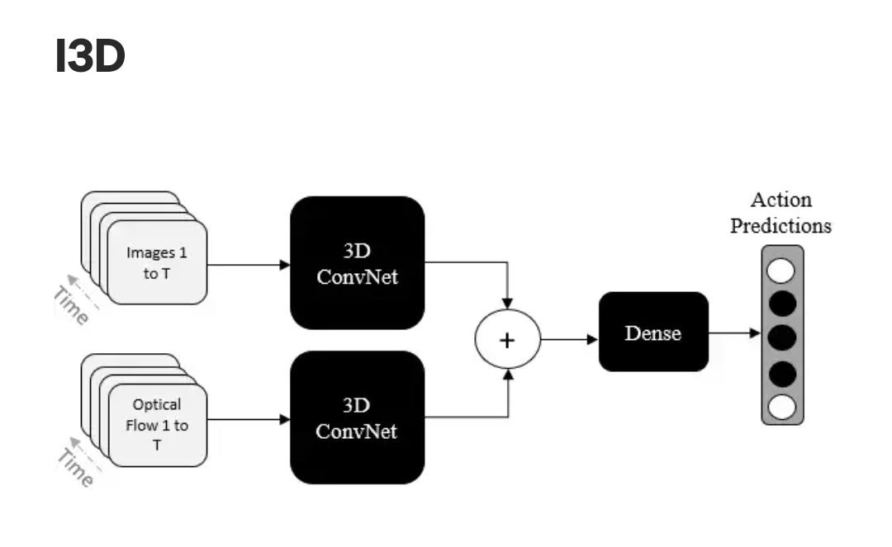
- RGB stream: Processes raw video frames through 3D CNN to capture appearance + motion jointly.
- Optical flow stream: Processes pre-computed optical flow fields through a separate 3D CNN to capture motion explicitly.
- Fusion: Both stream predictions are combined for the final action classification.
3D Inception Module
I3D uses Inception-style modules that allow the network to grow wider instead of deeper. Parallel branches with different filter sizes are concatenated, capturing features at multiple scales simultaneously:
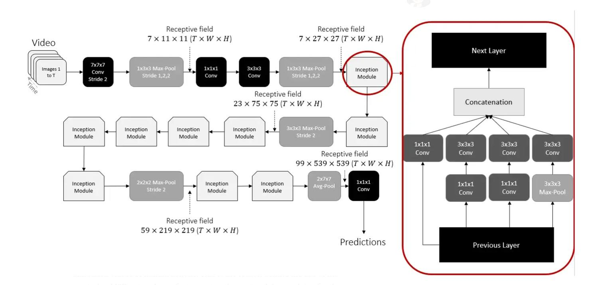
Receptive Field in I3D
The receptive field (RF) is the region in the input contributing to one output feature. For 3D video CNNs, the RF has three dimensions: temporal $T$, width $W$, height $H$.
Kinetics Dataset Progress
| Model | Year | Kinetics Top-1 Accuracy |
|---|---|---|
| TSN | Jul 2016 | ~73% |
| I3D + NL | Jan 2018 | ~78% |
| SlowFast 16x8 (ResNet-101 + NL) | Jan 2019 | ~80% |
| OmniSource irCSN-152 | ~2020 | ~84% |
| CoVeR (JFT-3B) | Jan 2022 | ~88% |
| UniFormerV2-L | Jan 2023 | ~90% |
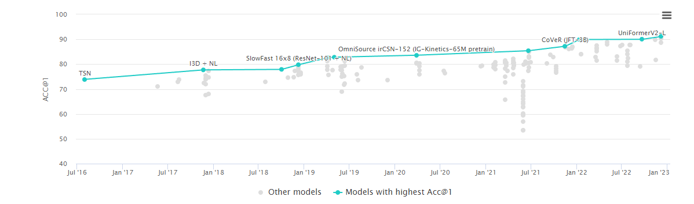
10. Multiple Instance Learning (MIL) for Anomaly Detection
MIL is a weakly supervised learning paradigm suited for video anomaly detection where only video-level labels are available (not frame-level).
- A bag is a video; an instance is a temporal segment of that video.
- A bag is labeled negative if ALL instances are negative (all segments are normal).
- A bag is labeled positive if at least one instance is positive (at least one segment is anomalous).
MIL Pipeline for UCF Crime Dataset
The UCF Crime dataset contains 1,900 videos, 128 hours total, 13 anomaly classes (Accident, Burglary, Fighting, Robbery, Shooting, etc.).
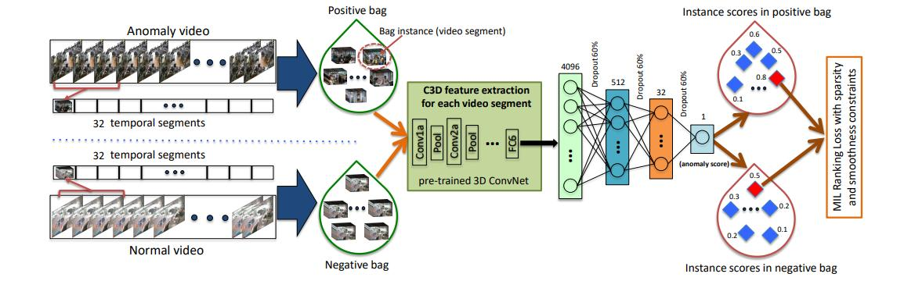
- Divide each video into 32 temporal segments (bag instances).
- Extract features from each segment using a pre-trained 3D ConvNet (C3D/I3D), producing 4096-dim feature vectors.
- A fully connected network assigns an anomaly score to each segment.
- Train with a MIL ranking loss: the maximum score in the positive bag must exceed the maximum score in the negative bag.
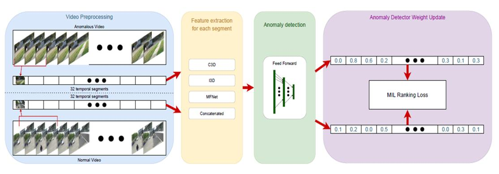
11. SlowFast Architecture
The SlowFast network is designed based on the observation that video frames typically contain both static areas (which do not change) and dynamic areas (which indicate important ongoing events). Two parallel pathways handle each type:
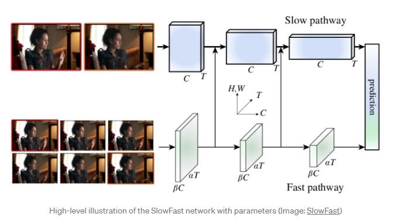
| Pathway | Frame Rate | Channel Capacity | Purpose |
|---|---|---|---|
| Slow pathway | Low (few frames) | High ($C$ channels) | Capture spatial semantics, appearance, scene context |
| Fast pathway | High (many frames) | Low ($\beta C$, $\beta \ll 1$) | Capture motion at fine temporal resolution |
Density-Guided Label Smoothing
Video segments at action boundaries contain multiple action types. Assigning the dominant class as a hard label gives misleading gradient signals. Density-guided label smoothing assigns target probabilities proportional to how densely each class appears in the segment:
Example: a segment that is 70% "texting" and 30% "phone call" gets smoothed label [0.7, 0.3] rather than hard label [1, 0]. This is critical for strict temporal localization (the distracted driver task requires ±1 second accuracy).
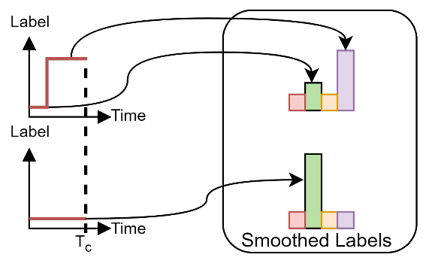
12. Crowd Behaviour Analysis
Crowd Density Estimation: Multi-Column CNN
This architecture combines deep and shallow CNNs to generate a crowd density map:
- Deep network path: VGG-like (3×3 convolutions, max pooling) — recognizes high-level semantic cues (heads, torsos) for nearby subjects.
- Shallow network path: Wide filters (5×5, average pooling) — detects low-level features (blobs, edges) for distant subjects that appear small.
Both paths are concatenated, passed through a 1×1 convolution, and interpolated to produce the density map. The estimated count = sum of all density map pixel values.
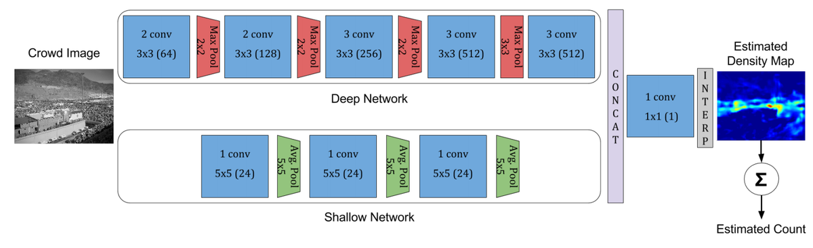
Crowd Anomaly Detection: Kalman + K-Means
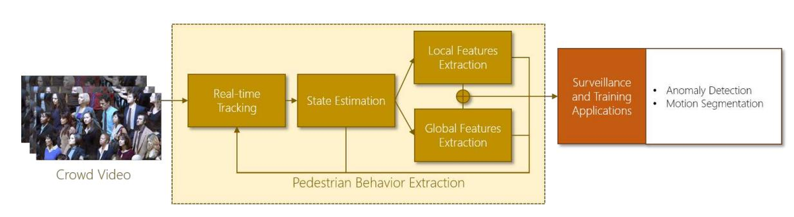
- Real-time tracking: Detect and track each pedestrian in the scene.
- State estimation (Kalman filter): Estimate each person's position and velocity over time.
- Local features: For each person, concatenate their state (position + velocity) over a temporal window.
- Global feature (k-means): Apply k-means to all local features. The largest cluster = the global (dominant normal) motion pattern.
- Anomaly detection: If a person's local feature is too far (by some distance metric) from the global feature, declare an anomaly (e.g., walking against the crowd flow).
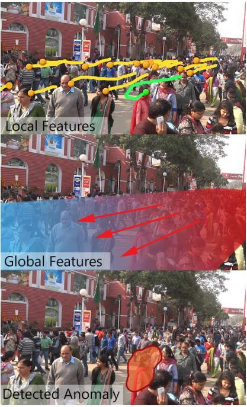